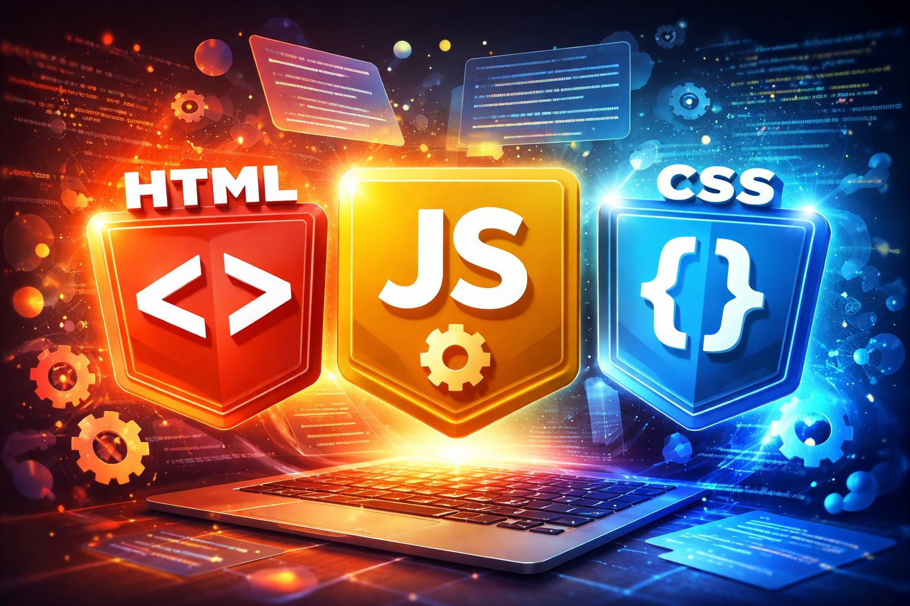

1. الهيكل الذكي (HTML)
▼
اللغة التي تحدد محتوى الصفحة. في عصر الـ AI، تعتبر هيكلة البيانات الجيدة أمرًا حيويًا لتفهم المحركات الذكية محتوى موقعك.
- تاريخ التأسيس: تم تطويرها بواسطة تيم بيرنرز لي في عام 1991.
- الإصدار الحالي: HTML5 هو المعيار الحالي والأكثر استخداماً حالياً.
- آلية العمل: تتكون من "وسوم" (Tags) تُكتب بين أقواس زاوية <> وتكون عادةً مزدوجه وسم بدايه tag ووسم إغلاق /tag.
- <> لهيكل الأساسي للمستند: !DOCTYPE html : تعريف إصدار HTML5. html : وسم الجذر. head : يحتوي على معلومات وصفية (عنوان الصفحة، ترميز النص). body : يحتوي على المحتوى الظاهر للمستخدم. <> لهيكل الأساسي للمستند: !DOCTYPE html : تعريف إصدار HTML5. html : وسم الجذر. head : يحتوي على معلومات وصفية (عنوان الصفحة، ترميز النص). body : يحتوي على المحتوى الظاهر للمستخدم.
- السمات (Attributes): توفر معلومات إضافية للعناصر، مثل ssimg src="image.jpg".
- بناء النصوص والروابط والقوائم.
- دمج الوسائط (صور وفيديو).
- استخدام علامات (Semantic HTML) لتحسين SEO.
- و اي امر يكتب في الهيكل الاساسي في صفحه لغه Html يكتب في <>
.jpeg)
.jpeg)
2. التصميم المتجاوب (CSS)
▼
تمنح الموقع مظهره. يمكنك استخدام أدوات التصميم الحديثة لبناء واجهات تحاكي تصميمات الذكاء الاصطناعي المعقدة بنعومة.
- تحديد الألوان والخطوط العصرية.
- إنشاء شبكات مرنة (Grid & Flexbox).
- إضافة تأثيرات التضبيب والشفافية الرائعة.
- طرق إدراج CSS: خارجي (External): ملف .css منفصل (الأفضل). داخلي (Internal): داخل وسم style في رأس الصفحة. مباشر (Inline): داخل وسم HTML باستخدام خاصية style.
- مكونات قاعدة CSS: تتكون من محدد (Selector) لاستهداف عنصر HTML، وخصائص (Property) وقيم (Value) للتنسيق [مثال: `h1 {color: blue;`] https://www.ar-wp.com/css/}.
- التطور: بدأت عام 1996 وتطورت لتصل إلى CSS3 و CSS4، التي تدعم حركات (Animations)، تدرجات لونية، وتخطيطات متقدمة مثل Flexbox و Grid.
.jpeg)
.jpeg)
3. منطق التفاعل والـ AI (JavaScript)
▼
لغة البرمجة التي تجعل الموقع حياً. هي الجسر الذي يربط موقعك بنماذج الذكاء الاصطناعي القوية (مثل ChatGPT API).
- الاستخدام الأساسي: تُعد الثالثة في الثلاثي الأساسي للويب مع HTML (للهيكلة) وCSS (للتصميم)، حيث تتولى JavaScript جانب التفاعل.
- التحكم في عناصر الصفحة ديناميكياً.
- غة تعمل في المتصفح: يتم تنفيذ أكوادها مباشرة داخل متصفح المستخدم (مثل Chrome، Firefox) دون الحاجة لترجمة مسبقة.
- استخدامات متعددة: لا تقتصر على المتصفح، بل تُستخدم في تطوير تطبيقات الموبايل، تطبيقات سطح المكتب، والألعاب، وحتى إنترنت الأشياء (IoT) باستخدام Node.js.
- المميزات الرئيسية: لغة مفسرة (Interpreted): يتم قراءة الكود وتنفيذه مباشرة. متعددة النماذج (Multi-paradigm): تدعم البرمجة الكائنية (OOP) والبرمجة الوظيفية. ديناميكية (Dynamically Typed): لا تتطلب تحديد نوع المتغيرات مسبقًا. الفرق بينها وبين Java: لغتان مختلفتان تمامًا. جافا سكريبت خفيفة ومرتبطة بالويب، بينما جافا لغة أكثر تعقيدًا وتعتمد على بيئة تشغيل آلة جافا الافتراضية (JVM). أشهر أطر العمل (Frameworks): مثل React، Angular، وVue لتطوير واجهات المستخدم، وNode.js للخلفية.
- الاتصال بالخوادم وجلب البيانات (APIs).
- تشغيل نماذج الـ AI البسيطة مباشرة في المتصفح.

4. لغه python
▼
بايثون (Python) هي لغة برمجة عالية المستوى، سهلة التعلم، ومفتوحة المصدر، تتميز ببساطة صياغتها (Syntax) وتشبه اللغة الإنجليزية، مما يجعلها مثالية للمبتدئين والمحترفين. تُستخدم في الذكاء الاصطناعي، علم البيانات، وتطوير الويب، وتدعم أنماط البرمجة الكائنية والإجرائية.
- اللغة: مفسّرة (Interpreted) وديناميكية الكتابة (Dynamically Typed)، لا تحتاج لتعريف أنواع المتغيرات مسبقًا.
- النشأة: ابتكرها Guido van Rossum وأصدرت لأول مرة عام 1991.
- المميزات: سهولة القراءة: تستخدم المسافات البادئة (Indentation) لتنظيم الكود بدلاً من الأقواس. تعدد الاستخدامات: لغة عامة الأغراض (General-purpose) تستخدم في الويب، الأتمتة، والتحليل. مكتبات ضخمة: توفر مكتبات قوية مثل Django للويب، و Pandas/TensorFlow للبيانات. المنصات: تعمل على مختلف أنظمة التشغيل (Windows, Mac, Linux).
- الاستخدامات الرئيسية: الذكاء الاصطناعي والتعلم الآلي (AI & ML): الأكثر شهرة في هذا المجال. علم البيانات والتحليل (Data Science): تستخدم بكثافة في التحليل المالي والبيانات الضخمة. تطوير الويب (Backend): باستخدام إطارات مثل Django و Flask. أتمتة المهام (Scripting): كتابة سكربتات لتنفيذ مهام متكررة.
- إدارة الذاكرة: تلقائية (Garbage Collection)، مما يسهل التعامل مع الذاكرة.